The Three Currencies of ML Performance
Compute, memory capacity, and communication — one mental model for why your training run is slow, and which knob actually fixes it.
This post is about training throughput — useful work per second (tokens/s), with the training recipe held fixed (so, not time-to-accuracy, which is a separate, optimization-side axis). The question is narrow and concrete: how do we get more useful work out of the same hardware per unit time?
The honest yardstick for that is MFU — Model FLOPs Utilization: the fraction of your hardware's peak FLOP/s that you actually spend on the model's useful math. Well-tuned training often sustains only ~40% — and recovering the missing 60% is the subject of this post.
A modern GPU is, to a first approximation, a machine for doing matmuls. Its tensor cores are the expensive part, and performance is the art of keeping them fed and busy. So instead of memorizing a hundred tricks, ask one question: what is starving the tensor cores right now? There are only three answers, and they are this post's three sections:
- Compute & memory bandwidth — the direct lever. Is each kernel limited by raw FLOP/s, or by memory bandwidth (GB/s) — how fast bytes move through on-chip and HBM memory? This is the roofline, and most "surprising" slowness is a memory-bound op wearing a compute-bound costume.
- Memory capacity — the indirect, double-edged lever. You cannot run what you cannot fit. Spare capacity is latent throughput — spend it on a faster operating point (bigger batches) or on skipping the fitting taxes (recompute, offload, sharding); hitting OOM forces you to pay those taxes — in compute or communication — just to fit.
- Communication — the lever that dominates at scale. The moment your model spans many GPUs and nodes, moving data between memory tiers and devices competes with compute. Hidden behind compute it is free; exposed, it collapses throughput.
Three currencies, but four walls — because Memory is one physical pool with two independent limits, how fast it feeds the cores and how much fits. This is the whole map; every section below is one row, and every technique is a trade among them:
| Currency | The wall that starves the cores | Unit | You're…-bound | Section |
|---|---|---|---|---|
| Compute | the math rate is too low | FLOP/s | compute-bound (= you're winning) | Roofline |
| Memory | bandwidth — bytes move too slowly | GB/s | memory-bound | Roofline |
| Memory | capacity — the bytes don't fit | GB | out of memory (OOM) | VRAM |
| Communication | bytes stranded on a slower link | GB/s (per link) | communication-bound | Communication |
Note — VRAM = HBM = "device memory," and it has two properties. These three names all point at the same thing: the GPU's onboard memory pool. On data-center GPUs (A100, H100, …) that pool is physically built from HBM (High-Bandwidth Memory) stacks, so this post uses the three terms interchangeably. Currencies #1 and #2 are simply its two independent properties — how fast it feeds the cores (bandwidth, GB/s) and how much fits in it (capacity, GB). The Memory Capacity section pins down that capacity-vs-bandwidth split.
The thread that ties them together: these are not three independent topics — they are one budget paid in three currencies. Keeping the tensor cores fed is the budget; compute, memory capacity, and communication are the currencies you spend, and almost every technique in the field is a trade between them:
- Activation checkpointing — buy capacity with compute
- Parallelism (ZeRO/FSDP, TP, PP) — buy capacity with communication
- A bigger batch — buy compute with capacity (it moves you rightward on the roofline)
- Quantization — buy back all three with a little accuracy
Once you see the trades, the zoo of techniques becomes a small, navigable map. Let's start where the work actually happens: the tensor cores.
Compute & Memory Bandwidth: the Roofline
This is the direct lever on throughput, and it breaks into two questions. First: are your matmuls actually running at peak FLOP/s? *Second: are you even spending your time on matmuls — or stalled waiting on bytes to arrive from HBM (i.e. bandwidth-bound)? The first is about feeding the tensor cores the right shapes and precision; the second is the roofline*, and most "surprising" slowness lives there.
Counting the FLOPs (the numerator of MFU)
Start with the only operation that matters for utilization: the matmul. A GEMM of shape (M × K) · (K × N) costs 2·M·N·K FLOPs — each of the M·N outputs is a dot product of length K, and every multiply-accumulate (MAC) is two FLOPs.
Chain these up across a transformer and that per-kernel count rolls up to a single model-level number:
C ≈ 6·N·D · forward 2·N·D + backward 4·N·D
That C is the numerator of MFU.
The bridge between the two views. A weight matrix is itself a K × N block, so its K·N entries are its parameters. Push D tokens through it and you pay 2·D·(K·N) = 2 × (tokens) × (that layer's params). Sum over every weight matrix and the forward pass is 2·N·D — now with N = total parameters and D = tokens (the backward pass adds ~2× more).
⚠️ Mind the letter clash. The GEMM's N is one layer's output width; the scaling law's N is the model's total parameter count — not the same N. And it's the GEMM's token dimension M that lines up with the scaling law's D.
Note — FLOPs vs FLOP/s. FLOPs (floating-point operations — the work the model needs, e.g. the6·N·Dcount) is not FLOP/s (operations per second — the rate the hardware sustains). MFU isn't the ratio of those two — that would have units of seconds. It's the ratio of two rates: your achieved FLOP/s (6ND ÷ step-time) over the hardware's peak FLOP/s, which lands it as a clean dimensionless fraction. The single most common unit slip is comparing the FLOPs count straight against a peak FLOP/s rate — i.e. forgetting to divide the work by time.
Question 1 — Are your matmuls running at peak?
A matmul is compute-bound, but you still have to earn peak FLOP/s — and there aren't many knobs. This one plot of achieved TF/s versus matrix size tells the whole story:
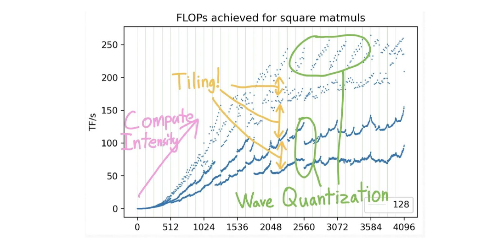
Three things move you up the y-axis:
- Compute intensity — just make the matmul bigger. A tiny GEMM can't keep the tensor cores busy; achieved FLOP/s climbs steeply with size before it saturates. Bigger batches and wider layers buy more of the peak (you'll pay for that memory in the VRAM section).
- Tiling & wave quantization — use round sizes. The GPU chops a matmul into fixed-size tiles, then runs those tiles in "waves" of thread blocks across its SMs. Two edge effects waste work: a dimension that isn't a multiple of the tile size leaves partially-filled edge tiles (tile quantization), and a tile count that isn't a multiple of the wave size leaves the last wave half-empty (wave quantization) — together they're the saw-tooth dips. The fix is trivial: keep dimensions to round multiples — a power of two such as 64 or 128 is a safe default. Those exact numbers aren't magic: the "friendly" size depends on the GPU, dtype, and BLAS library (the tile shapes cuBLAS/CUTLASS actually pick), so treat 64/128 as representative values — the real point is round, not 4095 or 1793. The library handles the tiling; you just pick friendly shapes.
- Lower precision — more FLOP/s per cycle. Narrower formats run faster on the tensor cores. BF16 is essentially a free lunch for training — roughly 2× the throughput of FP32 at no real accuracy cost, and the default for LLMs. FP8 is the next step for large language models: DeepSeek-V3 trained in FP8 with under 0.25% loss difference vs BF16 — but it needs Hopper/Blackwell + Transformer Engine and more numerical care.
🔗 Connects to VRAM: lower precision also halves the bytes, but the memory side of mixed-precision training (master weights, optimizer state, the "16 bytes/param") lives in the VRAM section. Here we only care that it raises FLOP/s.
Question 2 — Are you even compute-bound? (the roofline)
Most of a transformer's ops aren't big matmuls — and whether each one is compute-bound or memory-bound is set by its arithmetic intensity against the roofline's ridge point.
Note — arithmetic intensity (= operational intensity). An op's FLOPs ÷ bytes moved from HBM (FLOP/byte) — how much math you do per byte you fetch. It's a property of the op, not the chip. Compare it to the roofline's ridge point (= peak FLOP/s ÷ peak HBM GB/s, also a FLOP/byte): above it the tensor cores are the limit (compute-bound), below it the bandwidth is (memory-bound). The roofline plot's x-axis labels this operational intensity — same quantity, and this post uses the two names interchangeably.
- Compute-bound — the big matmuls (QKV, MLP, attention output). They reuse each fetched byte across many multiply-adds, so their intensity is high: they sit right of the ridge point, and peak FLOP/s is the ceiling.
- Memory-bound — the elementwise & reduction ops (softmax, LayerNorm, GELU, dropout, the residual add). Almost no math per byte, so they're limited by HBM bandwidth (A100 ≈ 2 TB/s, H100 ≈ 3.35 TB/s), not FLOPs.
Throughout this post, "memory-bound" means bandwidth-bound (too few GB/s) — never out of capacity (too few GB); running out of capacity is OOM, a separate failure handled in the Memory Capacity section.
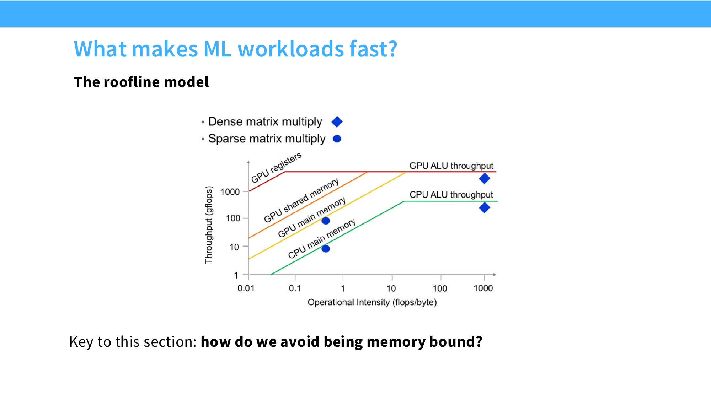

The rest of this section is the three ways to stop being memory-bound: kernel fusion, FlashAttention, and (carefully) quantize.
Kernel fusion (torch.compile, or hand-written kernels)
The fix for memory-bound ops is kernel fusion: instead of each op reading from HBM and writing back, merge the whole chain into one kernel so the intermediates stay on-chip and memory is touched only at the ends.
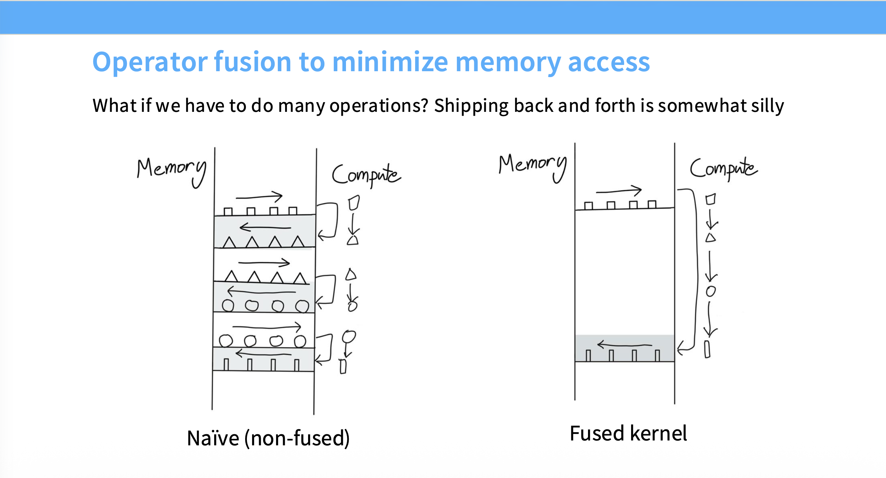
🧵 Kernel fusion — the technique. Get it automatically from torch.compile (TorchInductor → Triton), or hand-write a fused kernel in Triton / CUDA for the cases the compiler can't reach. learn more
FlashAttention: fuse and tile the attention
FlashAttention takes the kernel-fusion idea and adds a second move — tiling — to make it work for attention: attention is a big GEMM → softmax → GEMM, and naively it materializes the full S×S score matrix in HBM and reads it back for the softmax — a pile of round-trips over the slowest tier of memory. The fix is to chunk that computation into small tiles and fuse each tile into one on-chip pass, so the giant intermediate never lands in HBM.
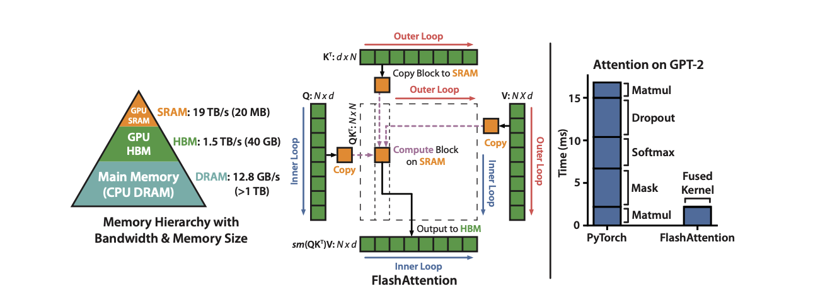
It's more than fusion — two ideas do all the work:
- Fuse the whole attention (QK^T → softmax → ×V) into one kernel, so the
S×Sscore matrix is built, softmaxed, and consumed entirely on-chip and never written to HBM. - Tile it into blocks small enough to live in SRAM (an online softmax lets the partial blocks combine correctly), so it only ever holds one tile. The attention's memory footprint drops from O(S²) to O(S), and the giant HBM round-trip of the full score matrix simply disappears.
The FLOP count is unchanged — still O(S²), the result bit-for-bit identical. FlashAttention buys nothing in compute; it is a pure memory-bandwidth win — the cleanest proof in this whole section that attention was memory-bound, not FLOP-bound.
Quantization: buy back compute and bandwidth (carefully)
Quantization spends a little accuracy to buy back the other two currencies at once: fewer bits per number means fewer bytes to move (a bandwidth win) and, on the right hardware, a faster matmul (a compute win). The one thing to keep straight is that which of those two you actually get depends on the scheme and the hardware — because two different things share the name:
- Weight-only (W4A16, GPTQ, AWQ, plus KV-cache quant): only the weights are stored low-precision; activations stay 16-bit, so the GEMM still runs in 16-bit — the kernel dequantizes the weights back to 16-bit first. It saves bytes, not compute, and it adds that dequant step.
- Native low precision (W8A8, or true FP8 with both operands low): both operands are low-precision, so the matmul runs on the FP8 tensor cores — the ~2× FLOP/s over BF16. But this only works if the GPU actually has FP8 units: H100 (Hopper) and L40S (Ada) do; an A100 (Ampere) or older has none, so there's no native FP8 path — you fall back to a BF16 matmul (plus a dequant) with zero compute speedup.
So match the scheme to your bottleneck:
- Memory-bound (decode): weight-only is a big win — you were bandwidth-limited streaming weights from HBM, so quartering the weight bytes nearly quarters the time, and the dequant hides in spare compute. ✅
- Compute-bound (training, prefill): weight-only can be net slower. You don't save on the bottleneck (compute), the tensor cores are already busy so the dequant kernel is pure exposed overhead, and you're still multiplying in 16-bit. To actually speed up a compute-bound job you need a native low-precision GEMM (W8A8, or FP8 training via Transformer Engine /
torch.float8) that genuinely engages the FP8 tensor cores — which needs both framework and hardware support. ⚠️
⚠️ Misconception: lower precision is always faster. → Reality: only when the hardware runs it natively (no dequant). Native FP8 (W8A8 on an FP8-capable GPU) speeds up both regimes; weight-only quant always dequants to 16-bit, so it only helps memory-bound decode — and can be slower for compute-bound training/prefill.
🔗 Connects to VRAM: even when it buys no speed, quantization always shrinks the footprint — fewer bytes per parameter and per KV-cache entry — which the memory-capacity section turns into more batch or longer context.
Don't guess — measure
You can't tell compute-bound from memory-bound by staring at code. The PyTorch profiler gives CPU+CUDA traces (Python wall-clock lies, since CUDA launches are async), and ncu (Nsight Compute) flags each kernel as compute- or memory-limited and reports occupancy. That verdict tells you which currency the op is spending — and therefore which technique above to reach for.
You now know how fast a kernel can run. The next lever decides whether it runs at all — and quietly sets how fast, too.
Memory Capacity: the Fit ⇄ Throughput Balance
| Quantity — how much | Rate — how fast | |
|---|---|---|
| Memory | Capacity — bytes that fit (GB) → OOM | Bandwidth — bytes that move (GB/s) → memory-bound |
VRAM is not a speed knob. It is a hard capacity wall: you either fit, or you OOM. But capacity couples to throughput in two opposite directions, which is what makes it the trickiest of the three currencies to reason about.
Headroom helps — free capacity is latent throughput. Spare VRAM converts into speed two ways:
- A faster operating point — a larger micro-batch or longer sequence raises arithmetic intensity, pushes you past the roofline ridge point, and lifts MFU.
- Not paying the fitting taxes — with room to spare you can skip activation recomputation, skip offload, and shard less aggressively, saving the compute and communication those cost.
Either way, an empty gigabyte is wasted throughput.
Aside — inference makes this literal. LLM servers fill spare VRAM with KV cache (via vLLM continuous batching) to run a bigger decode batch — empty capacity converted straight into throughput.
🔗 Connects to Compute: a bigger batch is the cheapest way to push a bandwidth-bound kernel rightward toward compute-bound on the roofline (more arithmetic intensity per byte) — until the tensor cores saturate and each doubling buys less. The catch is this section's whole point: that same bigger batch spends capacity, so it simultaneously walks you toward the OOM / capacity wall. Two different axes, opposite directions.
OOM hurts — and you pay to escape it. Every memory-saving technique buys capacity with another currency: extra compute, extra communication, or extra engineering complexity. That is the spine of this section. Before reaching for any of them, capture a memory snapshot and look at the actual allocation timeline — you cannot hammer a peak you have not measured.
🧵 PyTorch Memory Snapshot / memory_viz — categorizes every byte as PARAMETER / OPTIMIZER_STATE / ACTIVATION / GRADIENT / TEMPORARY so you attack the right component instead of guessing. learn more
What actually eats your VRAM
Borrow ZeRO's taxonomy. Memory splits into model states (parameters + gradients + optimizer states) and residual states (activations + temporary buffers + fragmentation).
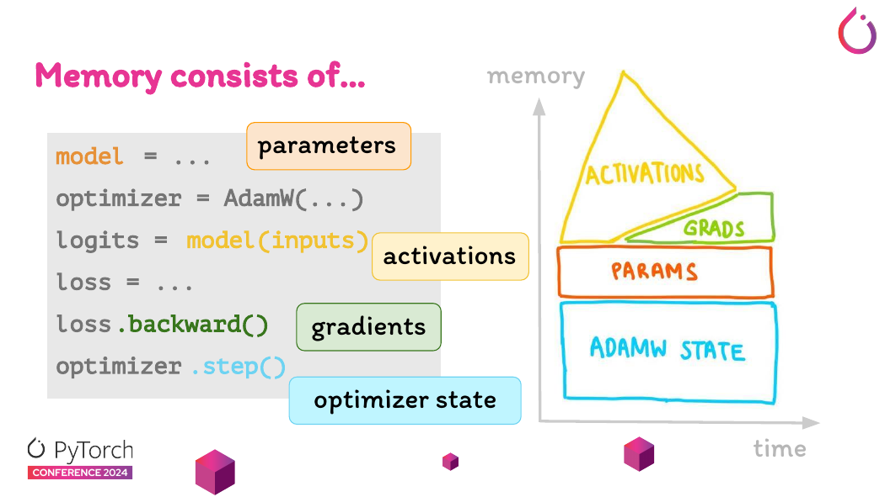
model=… allocates parameters, model(inputs) allocates activations, .backward() allocates gradients, optimizer.step() allocates optimizer state. Source: Slaying OOMs, PyTorch Conf 2024.Model states are fixed by parameter count and precision — roughly independent of batch and sequence length. Activations are the opposite: they scale with batch and sequence and spike transiently. The peak is what kills you, and it can land at the optimizer step or mid-backward depending on the device — which is why training can pass step 1 (optimizer states not yet allocated) and OOM on step 2.
VRAM capacity composition with AMP — the canonical 16 bytes/param
That breakdown is mixed-precision training (AMP): BF16 mixed-precision Adam keeps five copies per parameter, ≈ 16 bytes:
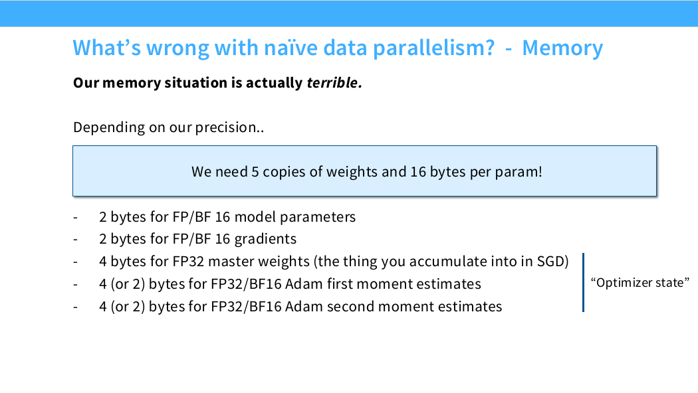
The FP32 master weights are the load-bearing term — the full-precision copy the optimizer updates into, so tiny BF16 updates don't vanish in rounding — and the 8 bytes of "optimizer state" are Adam's first moment m and second moment v.
⚠️ Misconception: mixed precision saves memory. → Reality: for model states it mostly doesn't — those 16 bytes/param are the same as pure-FP32 Adam (4+4+4+4), just split differently, and AMP can even add 4 bytes/param for an FP32 gradient buffer. AMP's real win is faster compute (BF16/FP8 tensor cores run ~2× FP32); the only memory it trims is the activations (kept in BF16, so half). Treat it as a compute optimization, not a model-state diet.
Activations: the elephant in the room
Params, gradients, and optimizer states are the memory everyone counts. The one people forget is activations — the intermediate tensors the forward pass must keep so the backward pass can compute gradients — and they're the part that actually blows your budget, because they explode with batch size and sequence length.
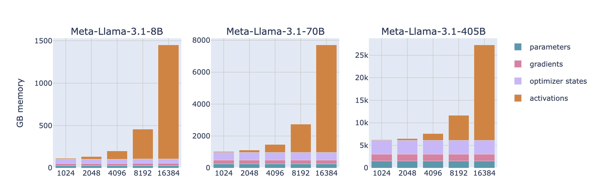
How big? Take Llama-3.1 at batch size 1 and sweep the sequence length. The model states — parameters, gradients, optimizer states — are a fixed cost: their stacked height barely moves from 1k to 16k tokens. Activations are the opposite. For Llama-3.1-8B they're almost negligible at 1k, start taking off around 2–4k tokens, and by 16k they tower to roughly 10× the model states, pushing the total toward ~1.4 TB. The same shape repeats at every size — 70B climbs to ~7.7 TB and 405B to ~27 TB, activations being the bulk of it at long context. That asymmetry is the whole point: a model that trains fine at 2k context OOMs at 32k with nothing about the weights changed — the activations just grew 10×+. So activations, not parameters, are usually what OOMs you, and the next tools exist to tame them.
Activation checkpointing — and how to be selective
The first and most important tool for taming activations is activation checkpointing (a.k.a. gradient checkpointing / rematerialization).
What it is. Normally every forward intermediate is kept until the backward pass needs it — that's the whole activation footprint. Checkpointing throws most of them away in the forward pass and saves only a few checkpoints (say, one per layer); when backward reaches a segment, it re-runs that segment's forward from the nearest checkpoint to regenerate the activations on the fly. You trade capacity for compute.
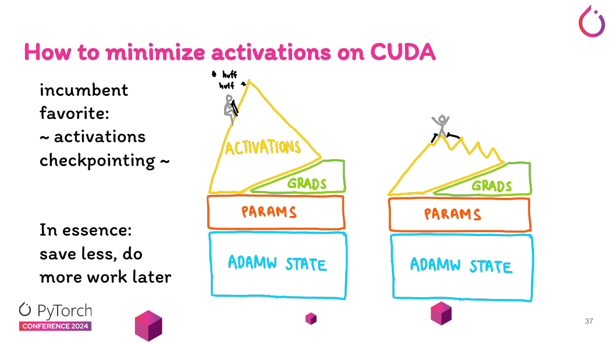
Full vs selective. Full checkpointing recomputes everything — a whole extra forward pass, ~30–40% more compute. Selective does far better by recomputing only the good deals. Picture it as an exchange rate: in the backward pass you spend FLOPs to win back bytes of VRAM, so you recompute whatever returns the most memory per FLOP spent. The cheap-FLOP elementwise and normalization ops — softmax, dropout, LayerNorm, GELU — are no-brainers: near-zero compute to redo, so always recompute them. The surprising call is among the matmuls:
- Recompute the attention core (QK^T → softmax → dropout → ×V). The surprising one — you throw away the biggest activation in the layer yet barely pay to rebuild it. The
S×Sscore matrix grows with the square of the sequence length, so it's the largest thing you'd otherwise store; but producing it is only a thin slice of the layer's FLOPs — roughlys/hof what the feedforward matmuls cost, a few percent at typical sizes. Most memory back, least compute spent. (This is just attention's arithmetic, not a FlashAttention trick — FlashAttention leans on the very same fact.) - Store the feedforward / projection matmuls. These are the compute-heavy half — multiplying by the big weight matrices — so recomputing one means paying its full FLOP bill again. Their activations are comparatively cheap to hold (they grow only linearly with sequence length), so keep them.
But isn't QK^T a big matmul? It is — so why is it "cheap"? A matmul's cost is (output size) × (the dimension it sums over).QKᵀand·Vsum only over the head dimension to form theS×Smap, costing about4·s²·hper layer; the feedforward and projection matmuls multiply by the fat weight matrices (h×h,h×4h) and run to about24·s·h². The ratio iss²h : sh²=s : h, so the attention core is only ~s/(6h)of the layer's math — ≈4% ats=2048,h=8192. It looks expensive because its output (S×S) is huge — and that same huge output is exactly why it's the biggest activation to store. Big to store, cheap to rebuild: the ideal recompute target. (The deal flips at long context — bys≈32k the ratio crosses ~⅔ and recomputing attention stops being a bargain, which is what the typical sequence lengths qualifier is guarding.)
The deciding axis here is cost to regenerate, not speed: recompute the cheap-to-recompute, memory-heavy ops (attention); store the expensive-to-recompute matmuls (feedforward). (It's a cousin of the roofline's compute-/memory-bound split — both come from FLOPs-per-byte — but it answers a different question: how many FLOPs to rebuild this activation, not what limits this op's speed.)
The rest of the toolkit — each spends a currency
🧵 Gradient accumulation — run small micro-batches sequentially for a large effective batch; only one micro-batch of activations is resident at a time. It cuts the activation footprint, not the FLOPs. learn more
🧵 Parallelism (ZeRO/FSDP, tensor, pipeline, sequence/context) — the general escape hatch when one GPU isn't enough: shard the model across GPUs and pay communication for capacity. ZeRO/FSDP shard the model states (params, grads, optimizer); tensor and sequence/context parallel also shard the activations. Either way it's the same trade — memory for comms — which is what the Communication section is all about. learn more
🧵 CPU/NVMe offload — not to be confused with checkpointing. Instead of recomputing, it moves optimizer state or activations to host RAM over PCIe and copies them back on demand: it spends communication, not compute — no recompute. But PCIe (tens of GB/s) is far below HBM, so it's usually slower than recomputation. Reach for it only when VRAM is so tight that even recomputation isn't enough, or to fit an oversized model onto a small GPU for inference (at a real speed cost). learn more
🔗 Connects to Communication: offload converts a VRAM shortage into a PCIe-bandwidth problem — the same currency-swap as ZeRO's all-gather, just across a slower tier.
🧵 Fragmentation — sometimes you're not out of memory, just fragmented: the caching allocator holds enough free bytes but no contiguous block big enough. Setting PYTORCH_CUDA_ALLOC_CONF=expandable_segments:True often reclaims it without touching a line of model code. One caveat: it can clash with NCCL buffer registration and CUDA graphs in distributed runs, so it's safest on a single GPU — test before relying on it multi-GPU. learn more
Everything so far lived on a single GPU — bound by compute, by memory bandwidth, or by capacity. The moment you use more than one, the fourth wall opens up in the space between the chips: communication.
Communication: the Bandwidth Hierarchy
Compute and capacity are local problems. Communication is what happens when one tensor core needs bytes that live somewhere else — and "somewhere else" is a ladder of progressively slower links. Every byte your model touches sits on one rung of a bandwidth hierarchy, and each rung down is roughly an order of magnitude slower than the one above:
SRAM ↔ HBM ↔ NVLink/NVSwitch (GPU↔GPU intra-node) ↔ PCIe (CPU↔GPU) ↔ InfiniBand/EFA (node↔node) ↔ storage
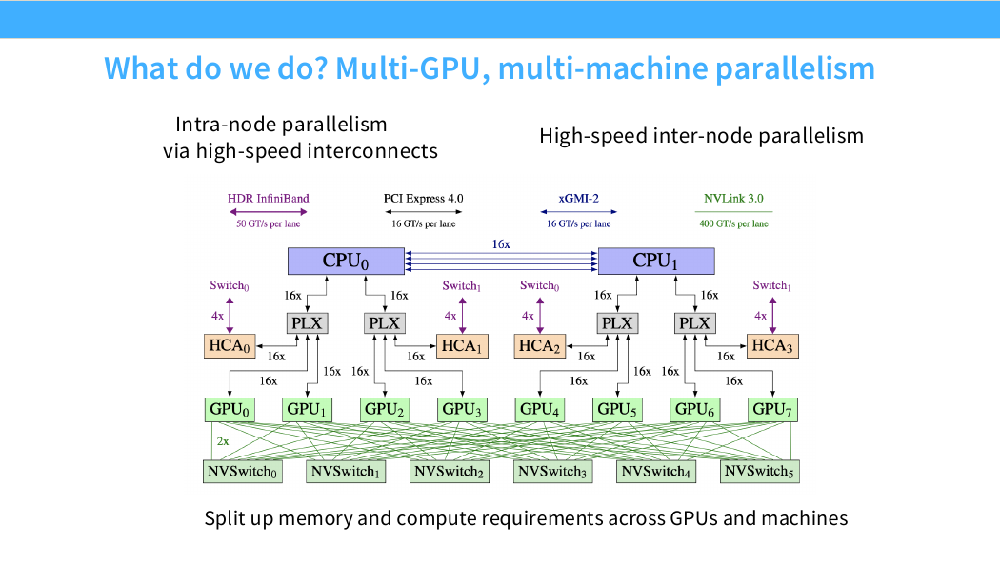
The only ruler that matters is still MFU. A transfer is "free" when you overlap it with computation: launch the bytes on one engine while the tensor cores grind on the previous tile, and the wall-clock cost disappears under the compute. The failure mode is exposed communication — a collective or copy on the critical path that no compute can hide, so the tensor cores idle while bytes are in flight. The whole job of a distributed trainer is to keep communication hidden.
🔗 Connects to Compute: the roofline's arithmetic intensity has a network analog. Big compute per byte transferred = comm hides easily; small compute per byte = comm exposes and you go communication-bound.
CPU → GPU: launch, feed, move
Each step, the CPU has to keep the GPU busy across the PCIe link — handing it both instructions (which kernels to run) and data (the next batch). All of it rides on one fact: the CPU runs ahead of the GPU, asynchronously. Performance on this link is keeping that head-start intact — never stalling the GPU, never accidentally serializing the two. Three beats: launch, feed, move.
Launch — the CPU dispatches, it doesn't compute. The CPU doesn't run kernels; it launches them onto a queue and races ahead while the GPU works through the backlog. This is why Python being slow rarely matters for training: a single GPU step usually dwarfs the Python that dispatched it, so the launch overhead hides behind compute. (The exception is tiny models, where launches outrun the GPU and you go launch-bound — fold many launches into one with torch.compile or CUDA graphs.) That same head-start is your opening for data: while the GPU grinds through the current batch, the CPU is free to prepare the next one.
⚠️ *torch.cuda.synchronize()— the async-killer you sometimes want. Callingsynchronize()makes the CPU block until the GPU has drained its whole queue — which erases the race-ahead above. Keep it out of your training loop: a stray sync per step serializes CPU and GPU and quietly tanks throughput. The flip side — the same blocking is mandatory for honest measurement: time a GPU op without it and you clock the launch (microseconds), not the execution*; readtorch.cuda.max_memory_allocated()while kernels are still in flight and the true peak may not have landed yet. So sync deliberately around timers and memory probes, and never in the hot path. (For timing, CUDA events are the lighter-weight tool.)
Feed — don't let the GPU starve. The per-step data pipeline is the everyday stall: every step you stream the next training batch (or inference input) onto the device, and if the CPU can't produce it — load, decode, augment — before the GPU finishes the current one, the GPU goes idle. That's the classic input-bound stall, and it's what bottlenecks you when iterating a big dataset. The fix is to overlap that host-side work with compute so the next batch is always ready in time:
🧵num_workers/prefetch_factor/persistent_workers— the DataLoader knobs that hide host-side load + augmentation behind GPU compute, so the next batch is produced and waiting before the current step finishes. (These feed the data pipeline — a separate concern from loading the model's weights, in the move beat below.) learn more
Move — get the bytes across efficiently. Producing the batch is only half the job; the bytes still have to cross to VRAM, and the same async principle governs the transfer. A tensor.to("cuda") from ordinary pageable host memory is synchronous and stages through a bounce buffer, so the CPU blocks for the whole copy. Page-lock the source instead and the GPU's DMA copy engine moves it asynchronously, overlapping the transfer with compute. The one-time model-weight load is the same problem with different tools: a memory-mapped format (safetensors) pulls weights in lazily, and on the right hardware GPUDirect Storage streams them disk→VRAM, skipping the CPU bounce buffer entirely.
🧵 Pinned (page-locked) memory + non_blocking=True — page-locking the host buffer lets the DMA engine transfer over PCIe on a separate CUDA stream, overlapping the H2D copy with compute. The overlap only happens when the source is pinned; on pageable memory the call silently synchronizes. learn more
⚠️ Misconception: ".to(cuda)is inherently slow, so I should stream files straight to VRAM." → Reality:.to(cuda)is slow mainly when the source is unpinned and synchronous — pin +non_blockingfixes most input-bound stalls first. Streaming straight from NVMe to VRAM (skipping the CPU bounce buffer) is GPUDirect Storage (GDS), which can load weights or data directly disk→VRAM — but it's not universal: it needs thenvidia-fsdriver and a supported NVMe/filesystem (XFS/ext4, or an RDMA filesystem like WekaFS/VAST), and silently falls back to the CPU bounce buffer otherwise. For portable weight loading, reach forsafetensorsfirst; GDS is the data-center upgrade. learn more
GPU → GPU: parallelism (distributed training)
When one GPU isn't enough, you split the model across GPUs — and every split is paid for in communication, so the interconnect sets the rules: NVLink/NVSwitch ~900 GB/s inside a node vs InfiniBand/EFA ~50 GB/s between nodes (per GPU; a ~10–20× gap). Chatty methods have to stay intra-node; frugal ones can cross nodes.
⚠️ GB/s vs Gbps — the bandwidth unit trap. Seen "EFA does 500 Gbps now" and figured the gap closed? It hasn't — two separate 8× traps stack up. (1) NVLink is quoted in GB/s (gigabytes), EFA/InfiniBand in Gbps (gigabits); since 1 GB/s = 8 Gbps, that "500 Gbps" is only ~62 GB/s. (2) AWS quotes EFA per instance (8 GPUs), not per GPU. Normalize both to per-GPU GB/s and the gap is real — and on Blackwell it actually widened:
| Generation (AWS) | NVLink, per GPU | EFA, per GPU | Gap |
|---|---|---|---|
| H100 / H200 (P5) | 900 GB/s | ~50 GB/s (400 Gbps) | ~18× |
| Blackwell B200 (P6) | 1,800 GB/s | ~50 GB/s (400 Gbps) | ~36× |
| Blackwell Ultra B300 | 1,800 GB/s | ~100 GB/s (800 Gbps) | ~18× |
Either way the qualitative point holds: inside a node is ~10–20× (often more) faster than between nodes — the asymmetry the rest of this section is built on.
Data parallelism — the common case (DDP → FSDP)
Plain data parallelism (DDP) is where almost everyone starts, and for most jobs it's all you need: put a full copy of the model on every GPU, split each batch across them, and all-reduce the gradients every step so the replicas stay in sync. It's simple and scales throughput nearly linearly — but it saves no memory: every GPU still holds the entire model (params + gradients + optimizer states — ~120 GB/GPU for a 7.5B model in mixed precision), almost all of it a redundant copy. So DDP only helps once the model already fits on one GPU; the moment the model itself is too big, replicating it more times can't help. The escape is to stop replicating those model states and shard them across the data-parallel ranks — which is exactly what ZeRO/FSDP do.
FSDP / ZeRO — sharded data parallelism (the default at scale). ZeRO shards the model states across the data-parallel ranks and rebuilds them just-in-time:
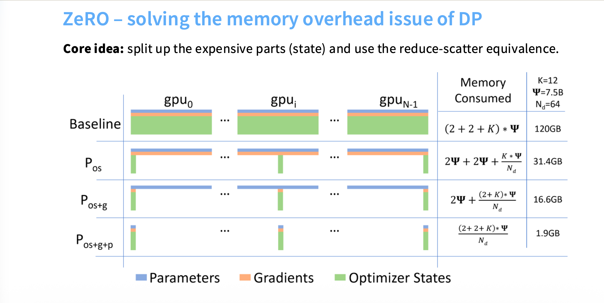
- What — ZeRO-1 shards the optimizer states, ZeRO-2 also the gradients, ZeRO-3 (= PyTorch FSDP) also the parameters.
- Why — the sharding is nearly free. ZeRO-1/2 move the same bytes as plain data parallelism (you were already syncing gradients), and even ZeRO-3 (~1.5× the traffic) overlaps its communication with compute — prefetching the next layer's weights while the current one computes — so it stays fast even across nodes.
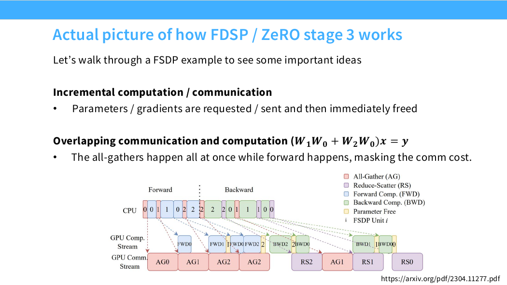
- When — your default for multi-GPU memory savings — start here. ZeRO-1 is basically free, so treat it as "always on"; turn up the stage (and only then add TP/PP) as you need more room.
🧵 HSDP (Hybrid Sharded Data Parallel) — shard within a node over fast NVLink, replicate across nodes: keeps the heavy reduce-scatter on the fast link and only a lighter sync across the slow one. learn more
Data parallelism still needs each layer to fit on a GPU (FSDP all-gathers one full layer at a time). When even a single layer — or the model's depth — won't fit, you reach for model parallelism, which splits the model itself rather than the batch:
Tensor parallel (TP)
- What — split a single layer's matmul across GPUs (each holds a slice of the weights), recombining with an all-reduce.
- Why — lets a layer that's too big for one GPU still run.
- When — only when a layer genuinely doesn't fit and the interconnect is very fast: TP all-reduces on every layer, so it must stay intra-node over NVLink (TP ≤ GPUs/node, usually ≤ 8).
Sequence parallel (SP)
- What — shard the activations TP leaves behind — LayerNorm, dropout, the residual adds — along the sequence dimension.
- Why — TP only shards the matmul activations; those pointwise ops still hold full-size activations, which dominate at long context.
- When — always bolted onto TP, when long-sequence activation memory is the squeeze.
Pipeline parallel (PP)
- What — split the model's layers into stages on different GPUs and stream micro-batches through like an assembly line.
- Why — only small point-to-point activations cross stage boundaries, so it tolerates slow inter-node links.
- When — rarely your first reach — it's fiddly: you hand-balance the stages and fight pipeline bubbles (GPUs idling while the pipeline fills and drains), so it takes real manual tuning to get right.
Whatever the tier — HBM, NVLink, PCIe, or the network — the lesson is the same: every byte lives somewhere, and the only thing that sets your MFU is whether you hid the trip behind compute.
Putting it together: one budget, three currencies
Step back and the whole field collapses into a sentence: keep the tensor cores fed (maximize MFU), and you will trade compute, memory capacity, and communication against each other to do it. Every technique in this post is a move in that trade:
- Activation checkpointing — spend compute to buy capacity.
- Parallelism (ZeRO/FSDP, tensor, pipeline) and offload — spend communication to buy capacity.
- A bigger batch — spend capacity to buy compute (higher arithmetic intensity → higher MFU).
- FlashAttention and kernel fusion — exact, same-FLOPs wins that just stop wasting bandwidth (the rare genuine free lunches). Quantization can join them, but only on the right hardware — it's conditional, not free.
The practical loop is always the same: measure which currency you are short on, then spend a cheaper one. Don't guess — a profiler (torch.profiler, Nsight ncu) tells you which bound you are hitting. Here is the cheat-sheet:
| Symptom (from the profiler) | You are… | First knobs to reach for |
|---|---|---|
| Low tensor-core util, high HBM traffic | memory-bound | kernel fusion (torch.compile), FlashAttention, bigger batch, quantization |
| Tensor cores near peak | compute-bound (you're winning) | lower precision (FP8/INT8), GEMM shapes that are multiples of 64/128 |
CUDA out of memory / cannot fit | capacity-bound | activation checkpointing (selective), gradient accumulation, ZeRO/FSDP, offload |
| GPU idle waiting on the dataloader | input-bound | pin_memory + non_blocking, more num_workers, DALI / GPUDirect Storage |
| GPU idle during collectives | communication-bound | overlap (FSDP prefetch), keep TP intra-node, HSDP, gradient accumulation |
| GPU idle between kernels | launch-bound | torch.compile, CUDA graphs |
None of these knobs is universally "on." TP=8 is great inside a node and a disaster across nodes. A bigger batch helps until the diminishing-returns regime. FSDP saves model-state memory but not activations. The skill is not knowing the techniques — it is knowing which currency you are short on, and that is just MFU plus a profiler.
If you take one thing from this: stop asking "is my model compute-heavy?" and start asking "which of the three currencies am I spending too much of, and what is the cheapest one to swap in?" That single reframing turns performance work from folklore into a decision tree.
Sources & further reading
- Stanford CS336, Lecture 5 — GPU kernels & performance (Tatsu Hashimoto): the matmul/roofline, tiling & wave quantization, and kernel-fusion intuition behind the Compute section. lecture 5 slides (PDF, GitHub)
- Stanford CS336, Lecture 8 — Parallelism basics (Tatsu Hashimoto): the clearest treatment of collective comms, ZeRO/FSDP, and 3D parallelism. lecture 8 slides (PDF, GitHub)
- "Slaying OOMs", PyTorch Conference 2024: a practical tour of fitting big models in memory. slides (PDF)
- The Ultra-Scale Playbook, HuggingFace / nanotron: end-to-end systems for training at scale, with superb figures. interactive book
References
- Stanford CS336 — Lecture 5 (GPU kernels, roofline, fusion)
- Stanford CS336 — Lecture 8 (Parallelism basics)
- Slaying OOMs — PyTorch Conf 2024 (slides)
- HuggingFace Ultra-Scale Playbook
- Kaplan et al., Scaling Laws (6ND)
- Pope et al., Efficiently Scaling Transformer Inference (decode is memory-bound)
- GPTQ
- AWQ
- FlashAttention
- torch.compiler docs
- PyTorch profiler docs
- ZeRO: Memory Optimizations Toward Training Trillion Parameter Models
- PyTorch torch.cuda.memory tooling / memory snapshot
- PyTorch AMP (torch.autocast / GradScaler) docs
- Reducing Activation Recomputation in Large Transformer Models (selective recomputation)
- NVIDIA: How to Optimize Data Transfers in CUDA (pinned memory, async copy)
- PyTorch DataLoader docs (num_workers, prefetch_factor)
- NVIDIA GPUDirect Storage
- NVIDIA HGX H100 platform (NVLink ~900 GB/s, IB/EFA bandwidth)
- FSDP paper (overlap timeline, arXiv 2304.11277)
- PyTorch FSDP / HSDP docs
- NCCL all-reduce = reduce-scatter + all-gather (bandwidth-optimal)